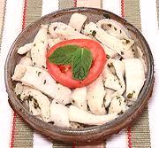

|
Tripe, Herb MarinatedItaly - Trippa alla Scapece | ||||
| Makes: Effort: Sched: DoAhead: |
13 oz *** 1 day Best |
This dish can be used as a side dish, antipasto, or as a sandwich filling. It is sure to be liked by tripe lovers, but many people will refuse to taste it. | |||
|
|
1-1/2 ar ------ 3 2/3 2 1/4 ------ ar |
# oz --- T c cl c --- |
Tripe (1) Salt -- Marinade Olive Oil ExtV Wine Vinegar, white Garlic Mint or Basil -- Garnish Mint or Basil |
Cooking time is long, but work time is short. It'll keep in the fridge for 5 days or more. Make - (5hrs - 20 min work)
|